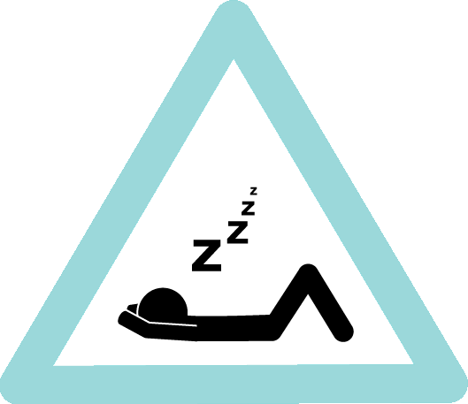

<ion-content [fullscreen]=true>

  <div id="container">

    <div *ngIf="alarmaActiva">
      
      <div *ngIf="!quiereDesactivar">
        <h4 class="texto">ACTIVADA</h4>
    </div>
    </div>


<div *ngIf="!alarmaActiva">
    
  </div>


  </div>

</ion-content>


<!-- <ion-header [translucent]="true">
  <ion-toolbar>
    <ion-title>
      Blank
    </ion-title>
  </ion-toolbar>
</ion-header>

<ion-content [fullscreen]="true">
  <ion-header collapse="condense">
    <ion-toolbar>
      <ion-title size="large">Blank</ion-title>
    </ion-toolbar>
  </ion-header>

  <div id="container">
    <strong>Ready to create an app?</strong>
    <p>Start with Ionic <a target="_blank" rel="noopener noreferrer" href="https://ionicframework.com/docs/components">UI Components</a></p>
    
    
  </div>


</ion-content> -->
